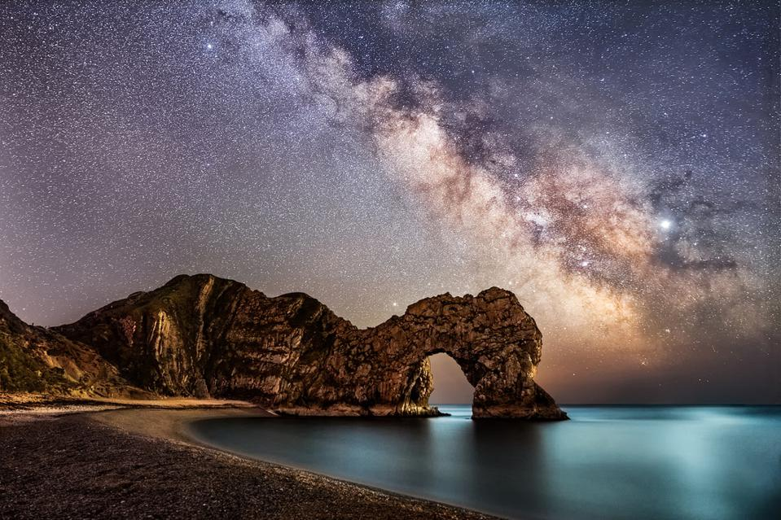
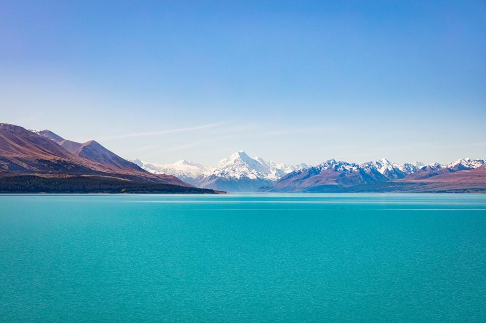
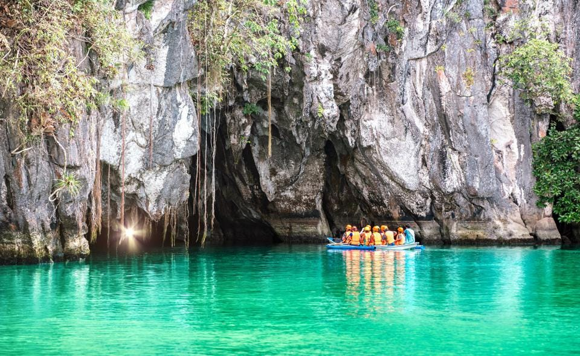

1. Peyto Lake, Canada:
In Alberta, Banff National Park is famous for Peyto Lake, which gets its stunning color from the glacier water feeding the lake. “It’s a popular sightseeing destination for tourists who also want to explore the local mountain area, with plenty of hikes and impressive driving routes,” says Kuoni.
2. Meeru Island, Maldives:
This dreamy bucket-list destination is only accessible by boat and is home to just one luxurious resort that has beach and overwater villas. “It’s easy to see why this destination was the most eye-catching beach, with crystal clear blue waters and white sands—it really does look like it’s in paradise,” says Kuoni.
3. Jurassic Coast, U.K.:
Stretching from Exmouth in East Devon to Studland Bay in Dorset, this 95-mile stretch of coastline is a World Heritage Site with stunning views across the English Channel. “Along the stretch of coast, you’ll find stack rocks, pinnacles and arches, including one of England’s most iconic landmarks, Durdle Door,” says Kuoni.
4. Yosemite:
Located in California’s Sierra Nevada mountains, this 750,000-acre national park is known for its giant sequoia trees, waterfalls and granite cliffs. “With its breathtaking views and dramatic landscapes, this place has something for everyone—whether you’re looking for challenging hikes or gentle strolls through the forest,” says Kuoni.
5. Mount Snowdon, Wales:
The highest mountain in Wales has views across Snowdonia, Pembrokeshire, Anglesey and Ireland, luring thousands of visitors a year. “There are a number of routes to the top of the mountain, with paths suited to most abilities looking to take on the climb,” says Kuoni.
